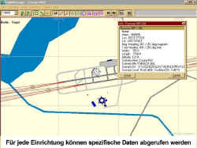

Flight
Manager
Flight
Manager
von Josef Dirnberger
getestet von André Niedhöfer
Nun geht das leidige Thema Flugplaner im FS doch
weiter. Eigentlich dachte man ja, dass es sich mit dem
Erscheinen des FS 2000 erledigt hätte. Und tatsächlich
findet der FS-Eigene Flightplanner vor allem bei den
Simmern Anklang, die bei der Flugplanung einfache
Mechanismen bedienen wollen. Ich gehörte auch dazu, bis
ich den FlightManager von Josef Dirnberger in die Hände
bekam. Wer wirklich die komplexen Situationen der
Erstellung von Flugrouten so realistisch nachvollziehen
möchte, wie möglich, der findet diesen Wunsch im FM
erfüllt.
Der FlightManager brüstet sich gleich mit vier
Funktionen in einer Software - also eine Art
Überraschungsei. Dazu gehört die allgemeine
Routenplanung mit allem drum und dran, die Darstellung von
Flughäfen und Szenerien in Kartenform, eine Moving Map-
und Tracking-Funktion sowie das Erstellen von
individuellen SID's, STAR's, EnRoute's und Approach-Charts,
wobei alle Luftstraßen berücksichtigt werden. Jede
Funktion ist dabei gleichermaßen von FS 98, FS 2000 und
dem Combat FS nutzbar. Das klingt doch alles ganz gut, oder?
Ob der FM diese Aufgaben aber auch gut bewältigt,
versuche ich im nachfolgenden Test zu klären.
Kommen wir als erstes zur Installation:
Nachdem man sich die Sharewaredatei (7,88 MB) und am
besten auch gleich das Patch (720 kB) heruntergeladen hat,
erfolgt wie immer die Installation. Diese ist schnell und
einfach gestrickt. Für den FS 2000 wird dabei auf Wunsch
gleich das notwendige "BGL compression/decompression
Tool" installiert. Bevor man sich den FM installiert,
sollte man darauf achten, dass alle
Mindestsystemanforderungen erfüllt werden: Pentium 200, 32MB RAM, 20MB Speicherplatz.
Vor allem einen schnellen Prozessor und Arbeitspeicher
sollte man besitzen. Warum, das kläre ich später.
 Nach dem Start des Programms sollte es eigentlich
losgehen - nein, so einfach ist das nicht! Die erste
Aktion, die man mit dem Programm ausführen sollte, ist
das Aufrufen der Hilfe-Datei. Denn ohne ein Studium dieser
Datei geht hier erst mal nichts. Doch alle Funktionen
werden auch hier nicht erklärt. Selbst nach mehrmaligem
Durchlesen sind wichtige Programminhalte noch nicht
verständlich. Die Hilfedatei hätte viel ausführlicher
sein sollen (nein, müssen!!), denn um wirklich alle
Optionen bedienen zu können braucht man mindestens einen
Tag!
Nach dem Start des Programms sollte es eigentlich
losgehen - nein, so einfach ist das nicht! Die erste
Aktion, die man mit dem Programm ausführen sollte, ist
das Aufrufen der Hilfe-Datei. Denn ohne ein Studium dieser
Datei geht hier erst mal nichts. Doch alle Funktionen
werden auch hier nicht erklärt. Selbst nach mehrmaligem
Durchlesen sind wichtige Programminhalte noch nicht
verständlich. Die Hilfedatei hätte viel ausführlicher
sein sollen (nein, müssen!!), denn um wirklich alle
Optionen bedienen zu können braucht man mindestens einen
Tag!
Um dieses Programm und all seine Funktionen zu
erläutern und etwas Hilfestellung zu geben, will ich
einen Beispielflugplan von Berlin Tegel nach
Wien-Schwechat erstellen. Dabei beziehe ich mich auf den
FS 2000, wobei die Schritte im CFS und FS 98 nicht
grundlegend anders sind. Menüpunkte, die sich nicht von
selbst erklären, stelle ich fett/kursiv dar. Los geht´s:
 Einbinden von Szenerien
Einbinden von Szenerien
Im Gegensatz zu manch anderen Flugplanern muss man beim
FM die Szeneriedaten per Hand auswählen und zum Auslesen
dem FM übergeben. Von vornherein ist bereits das Gebiet
der San Francisco Bay und das Areal Mittelmeer/Südeuropa
(Austria) eingefügt. Bevor man aber mit der Planung in
anderen Arealen anfängt, muss es erst eingebunden werden.
Dies geschieht in zwei Schritten:
- Szenerie-Areal kreieren (Scenery\Create Area):
Dabei muß wie gesagt jede BGL-Datei markiert und in den
FM eingefügt werden. Für meinen Flug nimmt man also die
BGL aus dem Ordner Eastern\Eurnw\scenery (auf CD2) und
FS2000\scenedb\cities\Berlin\scenery und bindet sie mit
Add Directory ein (bei FS98 auf CD Boosters\Europe).
Zusätzlich muss die FS2000\scenedb\afdfiles\ scenery\
eurnwafd.bgl eingefügt werden. Sie beinhaltet die Namen
der Flughäfen.
- Nun muß diese BGL-Dateien vom FM ausgelesen werden,
indem man das neu erschaffene Areal lade (Scenery\Load
Area). Dabei können noch bestimmte Optionen eingestellt
werden, z.B. die Mindestlänge der Runways, ab denen
Flughäfen berücksichtigt werden.
Und hier liegt auch die Begründung, warum man einen
leistungsstarken PC braucht. Es wird jede BGL ausgelesen
und daraus eine Karte mit Flüssen, Seen, Straßen,
Flughäfen sowie allen Navigationseinrichtungen erstellt.
Dies braucht je nach Leistung des PC und Größe des
Gebietes natürlich seine Zeit. Ich habe einmal ganz
Europa einlesen lassen, und mein PC hat dafür eine
dreiviertel Stunde gebraucht. Wenn man also wirklich alle
Szeneriedaten des FS einfügen will, muss ein erheblicher
Zeitaufwand eingeplant werden. Vor allem bei der
erheblichen Datenmenge des FS 2000 wird dies zur
Geduldsprobe.
Nach dem erfolgreichen Auslesen öffnet sich ein Fenster,
in dem die Szeneriespezifikationen dargestellt wird.
Gleichzeitig wird angeboten, die Daten in Form einer
Datenbank anzulegen. Dies ist auf jeden Fall
empfehlenswert, um nicht noch einmal die Ausleseprozedur
starten zu müssen. Dadurch geht der Ladevorgang des
Szenerieareals schneller.
 Die Kartenfunktion
Die Kartenfunktion
Wenn nun das Areal geladen wird, belohnt der FM aber
die lange Wartezeit belohnt. Zoomt man zielgerichtet z.B.
auf Berlin, so erkennt man alle Flüsse, Seen,
Hauptverkehrsstraßen und die detaillierten Flughäfen.
Hier liegt eindeutig die Stärke des FM. Alle relevanten
Informationen des jeweiligen Kartenausschnittes lassen
sich darstellen, ob Flughäfen, ILS-Schneisen, NDB, VOR,
Marker, ISEC's und natürlich Luftstraßen des oberen und
unteren Luftraums.

Für jede Einrichtung kann nochmals mit Hilfe eines
Kontextmenüs, welches sich durch einen Rechtsklick auf
die Station öffnet, ein Info-Fenster angezeigt werden, in
dem z.B. GPS-Koordinaten, Frequenz, Höhe, Reichweite des
Senders etc. dargestellt werden. Die Karte dient damit
sowohl einem IFR- wie auch VFR-Flug.
Für das Erstellen von IFR-Flügen lassen sich die Details
wie Flüsse und Seen auch ausblenden (View\Visuals), um
die Darstellung auf die Navigationseinrichtungen zu
konzentrieren. Natürlich lässt sich der Kartenausschnitt
auch ausdrucken.
Kommen wir zurück zum Beispielflug. Um beide Flughäfen
zur Verfügung zu haben, muss zusätzlich noch das bereits
vorhandene Austria-Gebiet, geladen werden (Scenery\Add
Area). Nun können die jeweiligen Karten erstellt werden.
Der Chart-Designer
Grundlegend lassen sich mit Hilfe des FM vier
Kartentypen erstellen:
- SID (Standard Instrument Departure) = der
instrumentengestützte Abflugsektor, der zu einer
Luftstraße führt
- EnRoute = Liste von Wegpunkten von Start- zum
Zielflughafen
- STAR (Standard Arrival) = führt von Luftstraße zu Anflugsektor
- Approach = Zielanflug (meist ILS-gestützt)
 Für einen "echten" Flugplan sind alle vier
Kartentypen Vorraussetzung. Das bedeutet, man muss erst
die einzelnen Karten erstellen, die später die Basis für
den kompletten Flugablauf liefern.
Für einen "echten" Flugplan sind alle vier
Kartentypen Vorraussetzung. Das bedeutet, man muss erst
die einzelnen Karten erstellen, die später die Basis für
den kompletten Flugablauf liefern.
Als erstes muss die SID von Berlin-Tegel RWY 26L erstellt
werden. Dazu klickt man auf File\New SID Chart. Es öffnet
sich ein Fenster, in dem man zuerst den Flughafen
auswählt - also Tegel. Da man von einer bestimmten Runway
startet, wird das SID als Runway Specific definiert. Dazu
müssen wir ein neues Leg erstellen, welches von RWY 26L
zu einer Intersection führt. Also Add, als Departure RWY
26L und OK. Nun wird auf der Karte die vorläufige
SID-Chart erstellt. Um den Weg zuzuweisen markiert man das
SID auf der Karte und setzt ihn mit einer beliebigen
Nav-Einrichtung gleich, in unserem Falle das NDB RW. Dabei
wird per Rechtsklick auf das NDB das Kontextmenü
geöffnet und die Schaltfläche Set Waypoint Position to
Selection ausgewählt. Nun hat man das Runway Specific SID
erstellt und speichert es mit Exit ab.
Mit den anderen Karten wird ähnlich verfahren.
Bei der EnRoute Chart wird der Start- und Zielflughafen
ausgewählt (Berlin-Tegel und Vienna-Schwechat) und es
erfolgt die grobe Darstellung der Wegroute. Jetzt muss man
wieder per Hand den ersten und letzten Wegpunkt festlegen.
Dazu nutzt man am besten Intersections, die den Eintritt
in die Luftstraßen markieren (ich habe die ISEC's ATVEL
und STO ausgewählt). Der Weg über die Luftstraßen wird
vom FM nun mit einem Klick auf Build Route erstellt (dabei
die Intersection STO markieren). Natürlich können die
einzelnen Wegpunkte verschoben, gelöscht oder neu
eingefügt werden. Ansonsten nimmt der FM immer die
kürzeste Verbindung als Grundlage des Flugplans. Diese
EnRoute Chart wird ebenfalls abgespeichert.
Als nächsten Schritt erstellt man die STAR Chart. Sie
führt dabei vom EnRoute zu einen Punkt, von wo der Anflug
ausgeführt werden kann. Die einzelnen Wegpunkte können
wiederum so editiert werden, um das STAR an die eben
erstellte EnRoute anzupassen. In meinem Falle ist der STAR
der Weg von STO zum Sollenau VOR.
Als letztes wird der Approach erstellt, der den Weg vom
STAR-Ausgang bis zum Touch-Down zeichnet. Dabei wird
unterschieden in Initial und Final Approach. Der Initial
leitet das Flugzeug vom Ausgang des STAR bis zum Final
Approach Fix, der wiederum direkt zum Touch-Down führt.
In meinem Beispiel habe ich den Approach für RWY 34
erstellt. Der Initial führt von Sollenau VOR bis zum
Final Approach Fix (FAF). An allen Punkten kann mit Hilfe
der Schaltfläche Proc eine Warteschleife oder eine
Verfahrenskurve eingefügt werden, wobei der Kurs selber
bestimmt werden kann. Ebenfalls individuell einstellbar
ist der Intercept Course, mit dem der Übergang von
Initial zu Final Approach als Kurve geflogen wird. Diese
Optionen werden später auch im Flugplan berücksichtigt.
 Der Flugplan
Der Flugplan
Sind alle Karten erstellt, folgt die Verschmelzung
dieser Informationen zum eigentlichen Flugplan (File\New
Flightplan). Dabei müssen erst alle Karten ausgewählt
werden, und als Grundlage in den Flugplan eingefügt
werden. Die zuvor abgespeicherten Karten sind nach
Flughafen und Kartentyp in einer Datenbank verfügbar. Die
Navigation innerhalb der erstellten Karten ist somit
schnell und einfach zu bewältigen. Hat man alle
notwendigen Karten ausgewählt und die maximale Flughöhe
eingegeben, kann man den Flugplan generieren und
gleichzeitig in das jeweilige Format des FS konvertieren.
 Beim FS 2000 liegt dann der Flugplan als PLN-Datei im
Ordner FS2000\Pilots vor, der vom internen Flugplaner
geladen werden kann. Zusätzlich lässt sich der Flugplan
in das EFIS98- sowie ProFlight-Format umwandeln.
Beim FS 2000 liegt dann der Flugplan als PLN-Datei im
Ordner FS2000\Pilots vor, der vom internen Flugplaner
geladen werden kann. Zusätzlich lässt sich der Flugplan
in das EFIS98- sowie ProFlight-Format umwandeln.
Bei der Erstellung des Flugplans gibt es noch eine
Besonderheit. Man kann zum Beispiel nur die EnRoute-Chart
laden und den restlichen Flugverlauf vom FM generieren
lassen. Mit der Option selected by ATC übernimmt der FM
die Flugplanung und geht dabei auf relevante
Informationen, wie z.B. Wetter und Flughöhe, ein. Diese
Informationen können direkt in den Flugplaner durch die
Option Weather eingegeben werden. Die Wetteroption
beinhaltet die Wolken- und Sichtverhältnisse, Windstärke
und -richtung, Temperatur, Druckverhältnisse sowie
Böenwahrscheinlichkeit und -stärke. Diese Informationen
können für jede Phase des Fluges (Departure, EnRoute,
Arrival) sowie jede Höhenlage erstellt werden. Die
Wetterbedingungen bestimmen dann die Flugroute. So wird
zum Beispiel bei Wind aus Richtung 250 die Startbahn 26L
vom FM zugewiesen.
Die ATC-Option lässt sich für jede Flugphase
einschalten. Es ist also dem Piloten überlassen, welche
Karten er selber erstellt, und welche Routen er vom ATC
zugewiesen bekommen haben will.
Weiterhin kann man mit dem Flugplaner
Flugzeugspezifikationen (Schaltfläche Airplane) editieren
und bestimmte Berechnungen abhängig von der Höhe (z.B.
Geschwindigkeit) mit Hilfe des Kalkulators tätigen.
 Moving Map
Moving Map
Eine weitere Funktion des FM besteht in der
Möglichkeit, die Flugroute und Position des im FS
ausgewählten Flugzeugs darzustellen. Ich konnte darin
jedoch keinen Sinn feststellen. Der FlightManager ist
schließlich ein autarkes Programm, welches nicht in den
FS eingebunden ist. Die Flugzeugbewegung während des
Fliegens ist dadurch nicht nachvollziehbar, denn der FS
setzt ja eine Pause, wird ein anderes Programmfenster
geöffnet.
Interessant jedoch ist die Möglichkeit, die bereits
geflogene Route darzustellen. Vor allem bei der Auswertung
von VFR-Flüge ist dies vorteilhaft. Jedoch sollte jeder,
der im Besitz des FS 2000 ist, lieber auf die interne
Moving Map-Funktion zurückzugreifen, auch wenn diese
ressourcenfressend ist.
Es gibt noch einige Zusatzfunktionen im FlightManager,
die sich jedoch selbst erklären (z.B. das Verschieben des
Flugzeugs oder das Messen von Entfernungen).
Fazit
Abschließend kann man sagen, dass der FlightManager
ein ausgereiftes Programm zum Erstellen von Flugplänen
ist. Jedoch setzt er ein hohes Grad an Vorwissen voraus
und ist so vor allem für Gelegenheitsflieger nur bedingt
empfehlenswert. Die Komplexität des Programms erlaubt es
auch nicht, "mal eben schnell" einen Flugplan zu
erstellen. Vielmehr wird man schon von Anfang an
gefordert, die komplexen Mechanismen zu verstehen. Dies
ist aber nicht unbedingt vorteilhaft, fällt der Einstieg
in die Bedienung des FM dadurch um so schwerer. Die eher
karg ausgestattete Hilfedatei gibt dabei nicht viel
Hilfestellung. Man hätte zum Beispiel lieber eine
vollständige Flugplanung zeigen können, um die Bedienung
dieses Programms zu erläutern, wie ich es hier in
Ansätzen getan habe. Sicher, es gibt eine Support-Seite
im Internet, aber wegen jeder Frage möchte ich nicht ins
Netz gehen.
Nichtsdestotrotz, hat man die Eingewöhnung in die
Bedienung erst mal hinter sich, eröffnet sich eine
vollständig neue Welt für den professionellen und
semi-professionellen Simmer, schließlich erlauben die
vielen Optionen eine völlig neue Art der Flugplanung.
Vielmehr wird hier die genaue Planung des Fluges
vorausgesetzt.
Natürlich ist auch der Preis von $37,45 (ca. 75 DM)
Ermessenssache. Schließlich gibt es auch billigere oder
gar kostenlose Flightplanner, die ihrem Anspruch auch
gerecht werden können. Für denjenigen, der sich ein
genaueres Bild machen will, lohnt sich der Download der im
Umfang begrenzten Sharewaredatei in jedem Fall.
Ich persönlich möchte den FM nicht mehr aus meiner
FS-Utility-Sammlung missen, ermöglicht er mir doch
Flugplanung auf höchsten Niveau. Der FlightManager ist
letztendlich ein nützliches Programm für ambitionierte
FS-Piloten, die höchstmöglichen Realismus auch schon bei
der Flugplanung haben wollen.
André Niedhöfer
andre@simflight.de
18.Dezember.1999


{kind=link}
{kind=link}